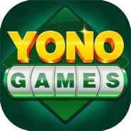
Best Yono Games
Discover popular game pages, Android app information and related categories from All Yono Games.
Explore Best Yono Games
This page brings together relevant gaming information and internal pages in one organized location. Browse the available apps below and open the dedicated page for more details.
Popular Games
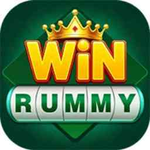
Win RummyExplore →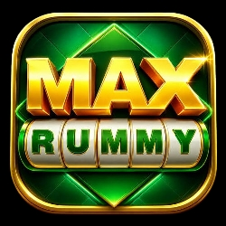
Max RummyExplore →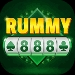
Rummy 888Explore →777 GameExplore →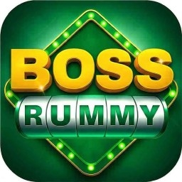
Boss RummyExplore →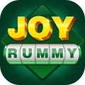
Joy RummyExplore →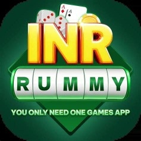
INR RummyExplore →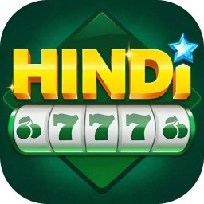
Hindi 777Explore →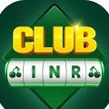
Club INRExplore →Saga SlotExplore →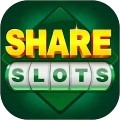
Share SlotExplore →Yono GamesExplore →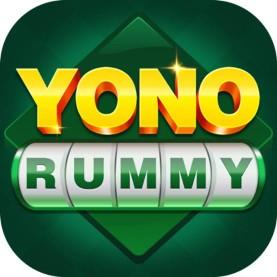
Yono RummyExplore →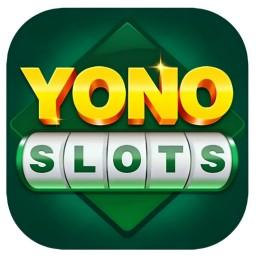
Yono SlotsExplore →Yono ArcadeExplore →Yono VIPExplore →Yono 777Explore →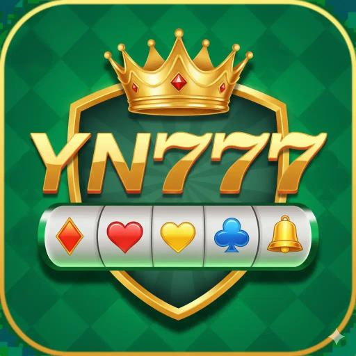
YN 777Explore →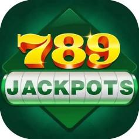
789 JackpotExplore →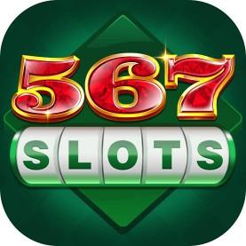
567 SlotsExplore →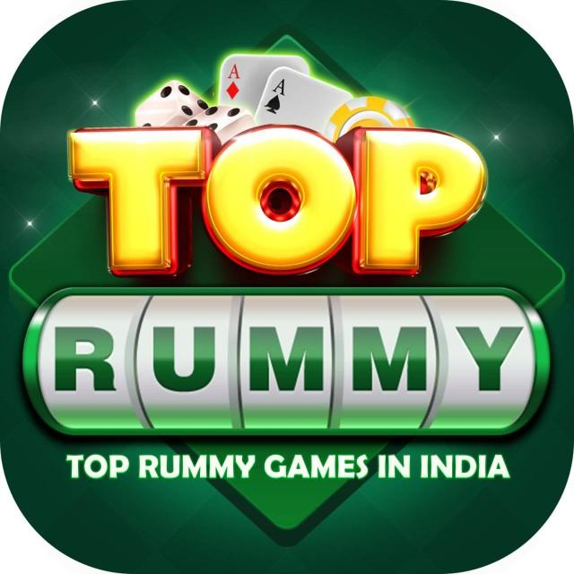
Top RummyExplore →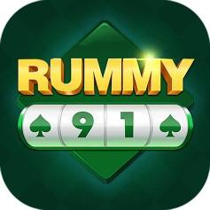
Rummy 91Explore →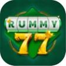
Rummy 77Explore →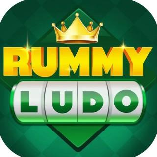
Rummy LudoExplore →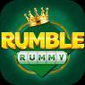
Rumble RummyExplore →More Information
All Yono Games organizes individual game pages and category pages to help visitors discover available app information more easily on mobile devices.
Availability, offers and third-party information may change over time. Users should review external platforms and their terms independently.